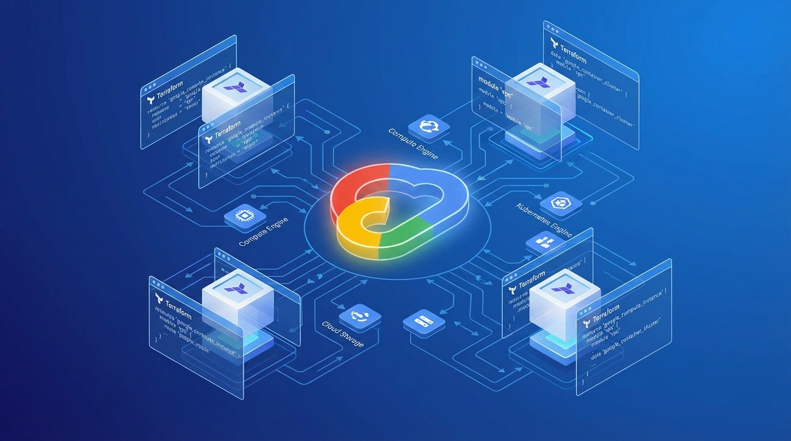

Building OpenClaw: An AI Agent That Lives on Your Devices
An introduction to OpenClaw - a personal AI assistant that runs 24/7 across your Mac, Android, and cloud infrastructure.
Building scalable, resilient infrastructure and cloud-native solutions. Enabling development teams to ship better code faster through platform engineering excellence.
Passionate about building infrastructure that scales and teams that thrive.
I'm a Principal Cloud Platform Engineer with deep expertise in building scalable, resilient infrastructure and cloud-native solutions. I specialize in implementing platform engineering best practices to enable development teams to ship better code faster.
My focus includes cloud architecture, infrastructure as code, DevOps methodologies, and building secure, automated systems that improve developer productivity and operational excellence.
When I'm not designing cloud systems, I'm constantly learning about new technologies and contributing to open-source projects. I'm passionate about sharing knowledge and helping others grow in the field of cloud engineering.
Hover to see proficiency
Building and scaling cloud infrastructure for enterprise organizations.
Contributing to the cloud-native ecosystem through open source.
A structured approach to organizing monorepo architecture with best practices for scalability, maintainability, and developer workflow optimization.

Shows how the CFT modules can be composed to build a secure cloud foundation. Enterprise-grade infrastructure patterns for Google Cloud deployments.
Find me on GitHub or reach out to discuss cloud architecture and platform engineering.
GitHub Achievements
I'm always interested in discussing cloud architecture, infrastructure as code, and platform engineering topics. Feel free to reach out!
Sharing knowledge about cloud architecture, AI agents, and platform engineering.
An introduction to OpenClaw - a personal AI assistant that runs 24/7 across your Mac, Android, and cloud infrastructure.
How AI coding agents are transforming software development. Workflows, productivity gains, and lessons learned from pair programming with AI.